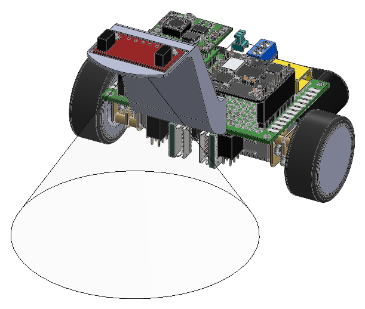
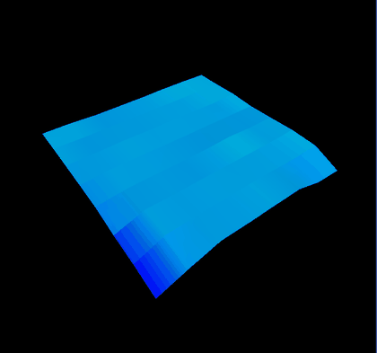

A two-wheel differential-drive platform built with my project partner. I brought up the ToF and IMU interfaces and tuned sensor fusion so the policy saw consistent inputs across surfaces. I trained a PPO navigation policy in PyBullet and deployed on-device inference to a memory-constrained embedded board, shrinking the network to fit the compute budget.
The robot

The robot used a downward-facing sensing setup to observe the terrain ahead while the differential-drive base provided the steering authority. I brought up the ToF and IMU interfaces and tuned sensor fusion so the policy saw consistent inputs across surfaces.
Training terrain
Potholes were generated procedurally rather than authored, so no two training episodes shared a layout and the policy could not simply memorise a course.

The same procedural generation also made evaluation possible on terrain the policy had not seen during training, rather than testing it on a fixed set of hand-authored layouts.
Policy
The navigation policy used PPO and was trained in PyBullet. I then deployed on-device inference to a memory-constrained embedded board, shrinking the network to fit the compute budget.
What was hard
The reward function went through four iterations. The robot first learned to spin in place, which collects no penalty and makes no progress. Adding a penalty for spinning did not fix it, because punishing the symptom does not remove the incentive; the behaviour turned into a slow spiral instead. It only broke once the reward paid for visiting new grid cells, which gave forward motion something to earn.
From simulation to hardware
Simulation made it possible to develop the PPO navigation policy in PyBullet before deploying inference to the physical robot. The embedded board was memory-constrained, so I shrank the network to fit the available compute budget.
I brought up the ToF and IMU interfaces, tuned sensor fusion so the policy saw consistent inputs across surfaces, and integrated the on-device inference with the robot's real-time motion-control system.
Limits
The depth observation was rendered, with no sensor noise, dropouts or dependence on surface reflectivity. The IMU signal was differenced from simulated velocities rather than modelled as a real sensor with bias and drift. Potholes were the only terrain feature, with no slopes, raised obstacles or moving objects.